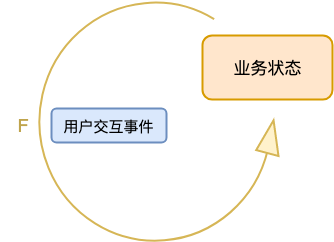

- 00 开篇词 怎样成长为优秀的软件架构师？.md
- 01 架构设计的宏观视角.md
- 02 大厦基石：无生有，有生万物.md
- 03 汇编：编程语言的诞生.md
- 04 编程语言的进化.md
- 05 思考题解读：如何实现可自我迭代的计算机？.md
- 06 操作系统进场.md
- 07 软件运行机制及内存管理.md
- 08 操作系统内核与编程接口.md
- 09 外存管理与文件系统.md
- 10 输入和输出设备：交互的演进.md
- 11 多任务：进程、线程与协程.md
- 12 进程内协同：同步、互斥与通讯.md
- 13 进程间的同步互斥、资源共享与通讯.md
- 14 IP 网络：连接世界的桥梁.md
- 15 可编程的互联网世界.md
- 16 安全管理：数字世界的守护.md
- 17 架构：需求分析 (上).md
- 18 架构：需求分析 (下) · 实战案例.md
- 19 基础平台篇：回顾与总结.md
- 20 桌面开发的宏观视角.md
- 21 图形界面程序的框架.md
- 22 桌面程序的架构建议.md
- 23 Web开发：浏览器、小程序与PWA.md
- 24 跨平台与 Web 开发的建议.md
- 25 桌面开发的未来.md
- 26 实战（一）：怎么设计一个“画图”程序？.md
- 27 实战（二）：怎么设计一个“画图”程序？.md
- 28 实战（三）：怎么设计一个“画图”程序？.md
- 29 实战（四）：怎么设计一个“画图”程序？.md
- 30 实战（五）：怎么设计一个“画图”程序？.md
- 31 辅助界面元素的架构设计.md
- 32 架构：系统的概要设计.md
- 33 桌面开发篇：回顾与总结.md
- 34 服务端开发的宏观视角.md
- 35 流量调度与负载均衡.md
- 36 业务状态与存储中间件.md
- 37 键值存储与数据库.md
- 38 文件系统与对象存储.md
- 39 存储与缓存.md
- 40 服务端的业务架构建议.md
- 41 实战（一）：“画图”程序后端实战.md
- 42 实战（二）：“画图”程序后端实战.md
- 43 实战（三）：“画图”程序后端实战.md
- 44 实战（四）：“画图”程序后端实战.md
- 45 架构：怎么做详细设计？.md
- 46 服务端开发篇：回顾与总结.md
- 47 服务治理的宏观视角.md
- 48 事务与工程：什么是工程师思维？.md
- 49 发布、升级与版本管理.md
- 50 日志、监控与报警.md
- 51 故障域与故障预案.md
- 52 故障排查与根因分析.md
- 53 过载保护与容量规划.md
- 54 业务的可支持性与持续运营.md
- 55 云计算、容器革命与服务端的未来.md
- 56 服务治理篇：回顾与总结.md
- 57 心性：架构师的修炼之道.md
- 58 如何判断架构设计的优劣？.md
- 59 少谈点框架，多谈点业务.md
- 60 架构分解：边界，不断重新审视边界.md
- 61 全局性功能的架构设计.md
- 62 重新认识开闭原则 (OCP).md
- 63 接口设计的准则.md
- 64 不断完善的架构范式.md
- 65 架构范式：文本处理.md
- 66 架构老化与重构.md
- 67 架构思维篇：回顾与总结.md
- 68 软件工程的宏观视角.md
- 69 团队的共识管理.md
- 70 怎么写设计文档？.md
- 71 如何阅读别人的代码？.md
- 72 发布单元与版本管理.md
- 73 软件质量管理：单元测试、持续构建与发布.md
- 74 开源、云服务与外包管理.md
- 75 软件版本迭代的规划.md
- 76 软件工程的未来.md
- 77 软件工程篇：回顾与总结.md
- 加餐 如何做HTTP服务的测试？.md
- 加餐 实战：“画图程序” 的整体架构.md
- 加餐 怎么保障发布的效率与质量？.md
- 热点观察 我看Facebook发币（上）：区块链、比特币与Libra币.md
- 热点观察 我看Facebook发币（下）：深入浅出理解 Libra 币.md
- 用户故事 站在更高的视角看架构.md
- 答疑解惑 想当架构师，我需要成为“全才”吗？.md
- 结束语 放下技术人的身段，用极限思维提升架构能力.md
- 课外阅读 从《孙子兵法》看底层的自然法则.md
36 业务状态与存储中间件
你好，我是七牛云许式伟。
相比桌面程序而言，服务端程序依赖的基础软件不只是操作系统和编程语言，还多了两类：
- 负载均衡（Load Balance）；
- 数据库或其他形式的存储（DB/Storage）。
存储在服务端开发中是什么样的一个地位？今天我们就聊一下有关于存储中间件的那些事情。

业务状态
让我们从头开始。
首先我们思考一个问题：桌面程序和服务端程序的相似之处在哪里，不同之处又在哪里？对于这样一个开放性的问题，我们不同人可能有非常不同的答案。
今天让我们从数据的视角来看这个问题。
我们知道，一个桌面程序基本上是由一系列的 “用户交互事件” 所驱动。你可以把它理解为一个状态机：假设在 i 时刻，该桌面程序的状态为业务状态i ，它收到**用户交互事件i 后，状态变化为业务状态i+1** 。这个过程示意如下：
业务状态i+1 = F( 用户交互事件i ，业务状态i )
用状态转换图表示如下：

那么，服务端呢？
仔细考虑你会发现，其实服务端程序可以用一模一样的模型来看待。只不过它不是由 “用户交互事件” 来驱动，而是由 “网络API请求” 所驱动。
你同样可以把它理解为一个状态机：假设在 i 时刻，该服务端程序的状态为业务状态i ，它收到**网络API请求i 后，状态变化为业务状态i+1** 。这个过程示意如下：
业务状态i+1 = F( 网络API请求i ，业务状态i )
用状态转换图表示如下：
那么，桌面程序和服务端程序的差别在哪？
它们最大的差别是业务状态的表示不同。
桌面程序的业务状态是如何表示的？内存中的数据结构。我们在上一章中提到，桌面程序的 Model 层是一棵 DOM 树，根结点通常叫 Document。这棵 DOM 树其实就是桌面程序的业务状态。
服务端程序的业务状态如何表示？用内存中的数据结构可以吗？
答案当然是不能。如果业务状态在内存中，服务端程序一挂，数据就丢了。
前面我们在 “[34 | 服务端开发的宏观视角]” 提到过：
服务端的领域特征是大规模的用户请求，以及 24 小时不间断的服务。
这句话是理解服务端体系架构的核心，至关重要。但某种意义上来说更重要的原则是：
坚决不能丢失用户的数据，即他认为已经完成的业务状态。
服务端对用户来说是个黑盒，既然用户收到某个 “网络API请求” 成功的反馈，那么他会认为这个成功是确认的。
所以，服务端必须保证其业务状态的可靠性。这与桌面程序不同，桌面程序往往需要明确的用户交互事件，比如 Ctrl+S 命令，来完成数据的存盘操作，这时业务状态才持久化写入到外存。而且对于大部分桌面程序来说，它并不需要支持持久化。
存储中间件与容灾级别
在没有存储中间件的情况下，服务端需要自己在响应完每一个网络 API 请求之后，对业务状态进行持久化。
听起来这好像不复杂？
其实不然，服务端程序的业务状态持久化难度，比桌面程序要高很多。还是同样的原因，桌面程序是单用户使用的，持久化的时候什么别的事情也不干，看起来用户体验也可以接受。
但是对服务端程序而言，如果我们在某个 API 请求完成并持久化的时候，其他 API 请求如果只能排队等着的话，往轻了说服务的吞吐能力太差了；往严重里说，在持久化执行的那个时段，服务端在用户眼里就停止服务了。所以持久化的时间必须要足够短，短到让人感知不到服务停顿。
服务端程序的业务状态并不简单。这是一个多租户的持久化状态。就算一个用户的业务状态数据只有 100K，有个 100 万用户，那么需要持久化的数据也有 100G。这显然不能用“常规桌面程序每次完全重新生成一个新文件”的持久化思路做到，它需要被设计为一种增量式的存储系统。
如果每一个做服务端程序的开发人员需要自己考虑如何持久化业务状态，这个代价显然过高了。
于是，存储中间件就应运而生了。
从历史上来看，第一个存储中间件是数据库，出现在 1974 年，它就是 IBM System R。
这一年 Internet 刚刚被发明出来。所以数据库的诞生背景，很可能是为工作站服务的，也算网络服务的范畴。
桌面程序很少用数据库。只有一些需要增量持久化业务状态的场景会被采用，比较典型的是微信。微信的本地聊天纪录应该是基于数据库存储的，只不过用的是嵌入式数据库，比如 SQLite。
最早期人们对存储中间件的容灾级别要求并不高。数据库都是单机版本，没有主从。人们对存储中间件的诉求是高性能的、稳定的、经过验证的。数据的可靠性如何保证？晚上选个服务的低峰时期对数据库做个离线备份就完事了。
对服务端开发来说，数据库的出现是革命性的，它大大提升了开发效率。
但在容灾级别这个事情上，随着互联网的普及，我们对它的要求越来越高。
首先，单机数据库是不够的，需要多机相互热备，这就是数据库主从结构的来由。这样我们就不需要担心数据库单机故障会导致服务临时不可访问，甚至出现更严重的数据丢失。
其次，单机数据库是不够的，单机存储量终归有上限，这样我们服务的用户数就有上限。在分布式数据库出现之前，人们的解决方案是手工的分库分表。总之，业务上我们需要做到规模可伸缩，不必担心单机物理存储容量的限制。
最后，单机房的可靠性也是不够的，机房可能会出现网络中断，极端情况下还可能因为自然灾害，比如地震，导致整个机房的数据丢失。于是就出现了“两地三中心”，跨机房容灾的数据灾备方案。
存储即数据结构
那么问题来了，数据库能够解决所有服务端程序的业务状态持久化需求吗？
答案当然是不能。
对比桌面程序我们能够知道，业务状态其实就是数据结构。虽然数据库这个数据结构的确通用性很强，但是它不是银弹，在很多场合下它并不适用。
存储即数据结构。
存储中间件是什么？存储中间件就是 “元数据结构”。
这个结论的逻辑在于下面几个方面。
首先，和桌面开发不同，桌面端的数据结构基本上都是基于内存的，实现难度较低。但是在服务端不同。我们每一次的业务状态改变都需要考虑持久化，所以服务端的核心数据结构都是基于外存的。
其次，服务端的数据结构对稳定性要求、并发性能（IOPS）要求极高。简单分析就可以知道，服务端程序的伸缩能力完全取决于存储的伸缩能力。
业务服务器往往是无状态的，压力大了新增加一台业务服务器非常容易。但是存储压力大了，并不能简单加一台机器了事，可能涉及数据的重新划分和搬迁工作。
这意味着，在服务端实现一个数据结构是非常困难的。我们举一个很简单的例子，在内存中我们实现一个 KV 存储非常容易，很多语言都有 Dictionary 或者 Map 这样的数据结构来做这事。就算不用库，我们自己花上几十分钟或一个小时来实现，也是非常轻松的一件事情。
但是，一个服务端的 KV 存储非常非常复杂，绝非一个人花上一天两天就可以干出来。就算干出来了，也没人敢立刻投入使用，需要经过非常庞大的测试案例进行方方面面的验证，才敢投入生产环境。并且，即使敢投入生产环境了，为了以策万全，刚开始往往也是采用“双写”的方式：同时使用一个成熟存储系统和我们新上线的存储。
存储系统的品控，至关重要。
正因为服务端的数据结构实现如此之难，所以对于服务端来说，所有业务需要涉及的数据结构都需要抽象出来，成为一个存储中间件。
存储中间件会有多少？
这与服务端开发的模型抽象有关。今天没有比较系统性的理论告诉大家，有了这样一些数据结构就完备了。但是从更长远发展的角度来看，我们很可能需要回答这个问题。
所以，存储中间件是 “元数据结构”。
这里说的 “元数据结构”，是我自己发明的一个词。它表达的含义是，数据结构的种类是非常有限的，并且最好理论可被证明，有了这样一些基本的数据结构，所有的业务需求都可以高效地实现。这些基本的数据结构，就是我说的 “元数据结构”。
今天我们接触的存储中间件有哪些？不完整的列表如下：
- 键值存储（KV-Storage）；
- 对象存储（Object Storage）；
- 数据库（Database）；
- 消息队列（MQ）；
- 倒排索引（SearchEngine）；
- 等等。
目前看，存储中间件的种类是不可枚举的。但它很可能只是受限于我自己的认知，也许有一天我们能够在这个问题上找到更加完美的答案。
结语
今天我们从桌面端程序和服务端程序的业务状态开始，探讨了存储中间件的由来。
前面我们在 “[34 | 服务端开发的宏观视角]” 提到过：
服务端的领域特征是大规模的用户请求，以及 24 小时不间断的服务。
这句话是理解服务端体系架构的核心，至关重要。但某种意义上来说更重要的原则是：
坚决不能丢失用户的数据，即他认为已经完成的业务状态。
存储即数据结构。存储中间件就是 “元数据结构”。
对于服务端来说，存储中间件至关重要。它不只是极大地解放了生产效率，也是服务端的性能瓶颈所在。几乎所有服务端程序扛不住压力，往往都是因为存储没有扛住压力。
如果你对今天的内容有什么思考与解读，欢迎给我留言，我们一起讨论。下一讲我们将聊聊数据库。
如果你觉得有所收获，也欢迎把文章分享给你的朋友。感谢你的收听，我们下期再见。
© 2019 - 2023 Liangliang Lee. Powered by gin and hexo-theme-book.